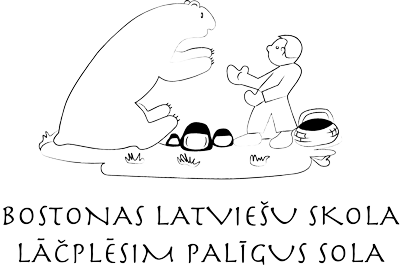
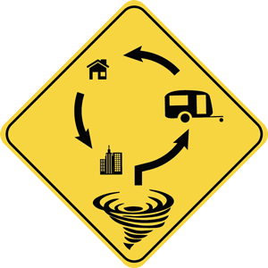

Living Room
September, 2014 | S. Johansone
An interior design for a living room in an apartment building.
Living and Reading Room
November, 2014 | S. Johansone
An interior design and reconstruction in a country house.
Studio Room
April, 2013 | S. Johansone
An interior design for a studio room in an apartment building.
Office
April, 2011 | S. Johansone
Developed a new interior design and provided graphical analysis of the present and the perspective design of the office building for the "March Sun" Group of Architects.
Reproduction and digitalization of the logo for Boston Latvian School (S. Johansone, 2016).
A new logo project designed as an idea for the new McAulife library in Framingham, MA. (Rebranded by S. Johansone, 2015).
The sign reproduces the concept "Tornadoes strike trailer parks first" in the form of a street sign. This means working within the established visual iconography of signage in the United States and without using any text at all. (S. Johansone, 2016).
Arts & Crafts Movement
December, 2016 | S. Johansone
This is informational poster about the bold-faced Arts and Crafts movement (1860 - 1910). An extensive and fascinating research led me to William Morris's designs for Kelmscott Press in which I found my inspiration for this poster. The main features of the movement can be clearly seen, although it is presented inversely.
We are all migrants
May, 2016 | S. Johansone
Expressing human migration. Created of construction paper.